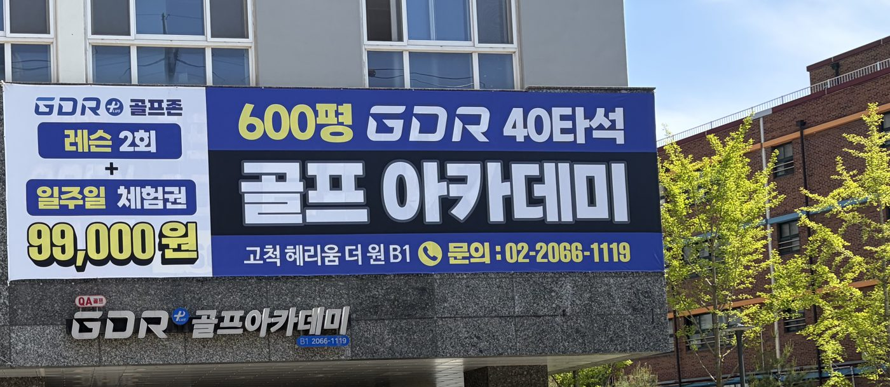
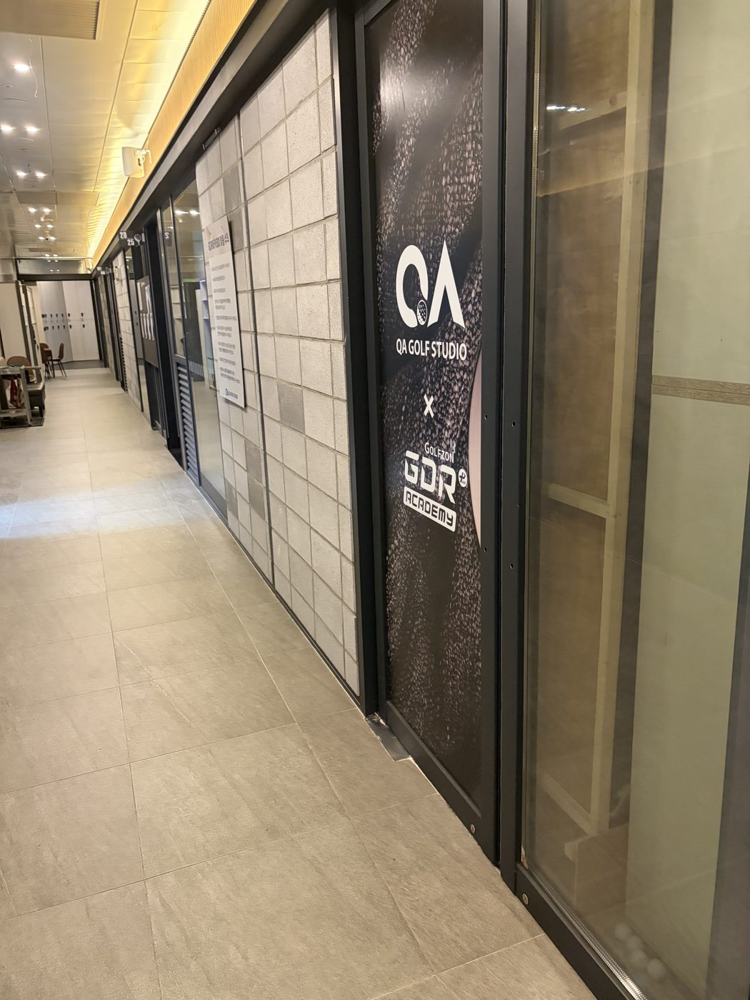
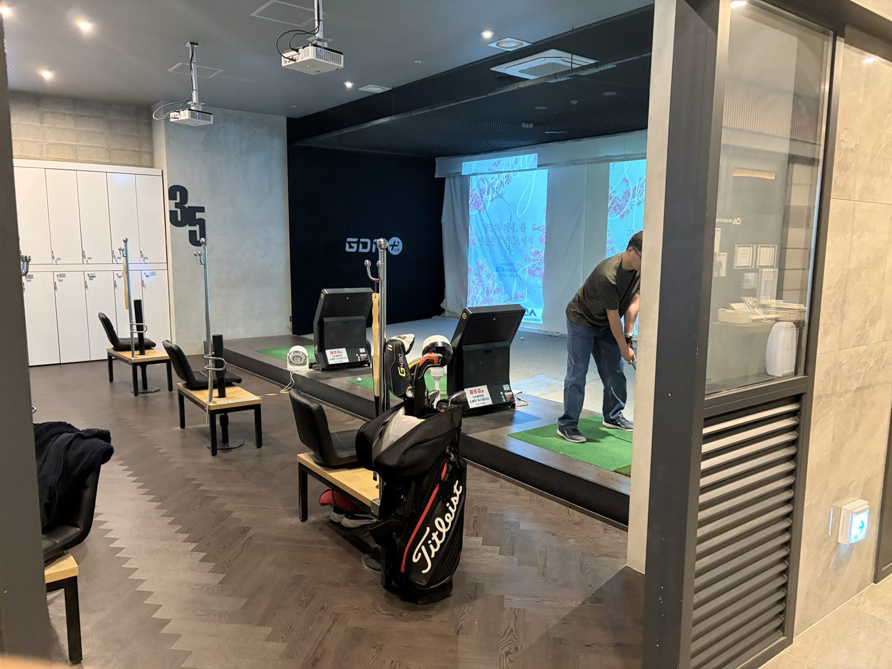
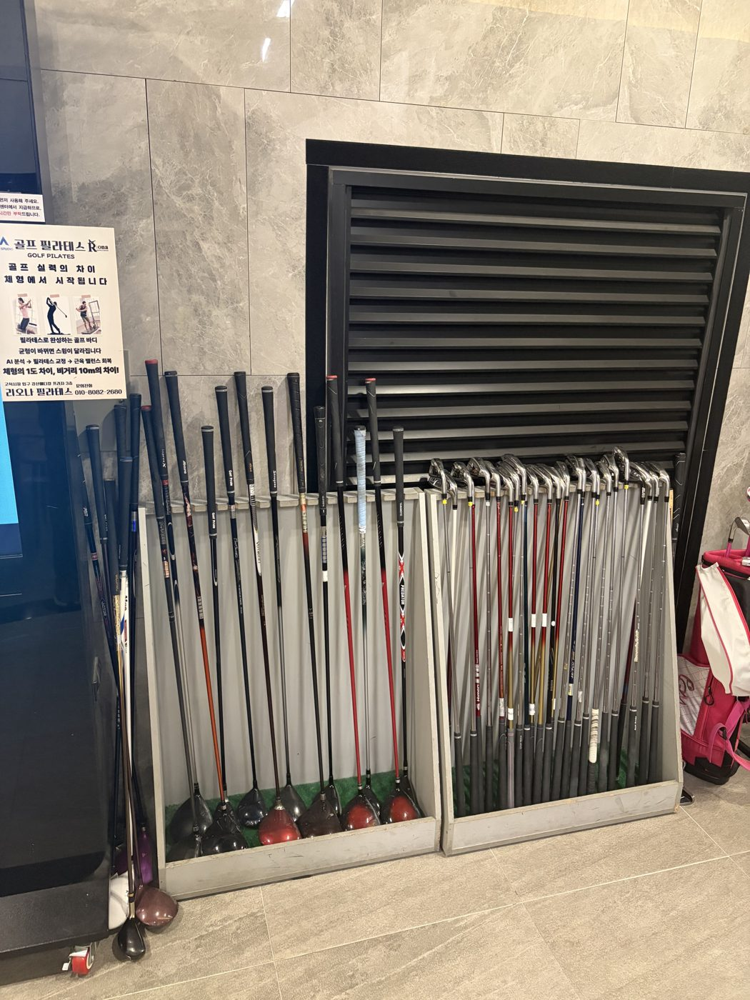

고척 QA골프스튜디오
인스타그램 · 블로그 첫 게시물
우리가 잡은 한 줄
오늘 한 번 더 서 보는 사람의 운동입니다.
스윙이 늘지 않아서 골프를 그만두는 사람은 드뭅니다. 옆 사람 눈이 신경 쓰여서, 시간이 안 맞아서, 시작이 무거워서 그만둡니다. 실력은 나중 문제이고, 먼저 치워야 할 것은 문턱입니다.
부장님 말씀 그대로입니다 — “결국 문턱을 낮추어 상담기회를 늘리는 구조”. 그래서 모든 글을 「문턱을 치웠다」 하나로 잡았습니다. 시설 자랑이 아니라, 못 오던 사람이 올 수 있게 된 이유를 말합니다.
주말 10:00~21:00
고른 사진 8장
저장된 12장을 전부 보고 8장만 남겼습니다. 같은 복도를 각도만 바꿔 찍은 4장은 지웠고, 옆 가게 광고와 사람 얼굴이 나온 부분은 잘라냈습니다.








인스타그램 첫 게시물
사진 6장을 한 묶음으로 올립니다. 계정은 @gocheok_qa_golf 입니다.
네이버 블로그 첫 글
— 고척 600평 골프 아카데미가 타석을 벽으로 나눈 이유
골프는 잘 치는 사람의 운동이 아닙니다.
오늘 한 번 더 서 보는 사람의 운동입니다.
사람들은 스윙이 안 늘어서 그만두지 않습니다
골프를 시작했다가 접은 분들께 이유를 물으면 스윙 이야기는 잘 나오지 않습니다. 옆 타석 사람이 자꾸 쳐다보는 것 같아서, 퇴근하면 이미 닫혀 있어서, 처음부터 큰돈을 써야 할 것 같아서. 실력은 나중 문제입니다. 먼저 치워야 할 것은 문턱입니다.
그래서 타석을 벽으로 나눴습니다
고척 QA골프스튜디오의 타석은 벽과 문으로 나뉘어 있습니다. 헛스윙을 해도, 공이 굴러가도, 보는 사람이 없습니다. 초보가 마음 놓고 못 칠 수 있는 자리 — 그게 연습장의 첫 번째 조건이라고 봅니다.
그리고 시간을 열었습니다
평일 06:30부터 23:30까지, 주말은 10:00부터 21:00까지 엽니다. 출근 전 한 시간도, 퇴근 후 한 시간도 가능합니다. 「시간이 없어서」라는 말이 통하지 않는 시간표입니다.
600평, GDR 40타석
고척 헤리티지 더 원 지하 1층. 600평에 골프존 GDR+ 40타석입니다. 넓다는 건 자랑이 아니라, 기다리지 않는다는 뜻입니다.
시작은 일주일이면 충분합니다
처음부터 길게 결정하실 필요 없습니다. 레슨 2회와 일주일 체험권으로 먼저 서 보시고, 그다음에 정하시면 됩니다.
한 번 서 보는 것. 그것부터 하시면 됩니다.
📞 02-2066-1119
📷 인스타그램 @gocheok_qa_golf
마지막 한 줄을 이렇게 잡았습니다
첫 글에서 가장 많이 새는 자리가 마지막 한 줄입니다. 세 가지를 지켰습니다.
부장님께 여쭙는 세 가지
- 체험권 99,000원이 지금도 그대로인가요. 그대로면 글에 숫자를 넣겠습니다.
- 복도의 클럽 랙은 대여용인가요, 회원 보관용인가요. 대여용이면 「빈손으로 오셔도 됩니다」를 한 줄 더 쓰겠습니다.
- 룸형 타석이 40타석 전부인가요, 일부인가요. 일부면 문장을 그에 맞게 고치겠습니다.